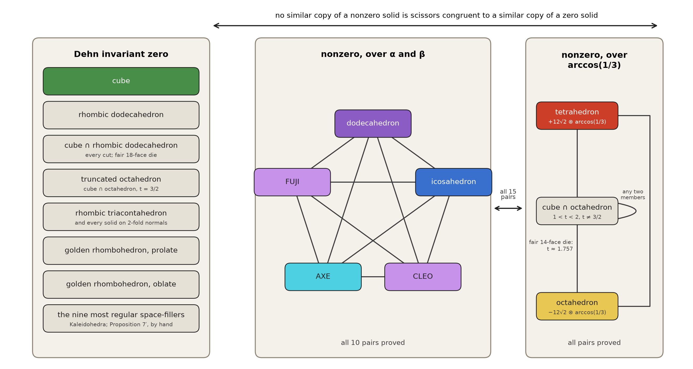
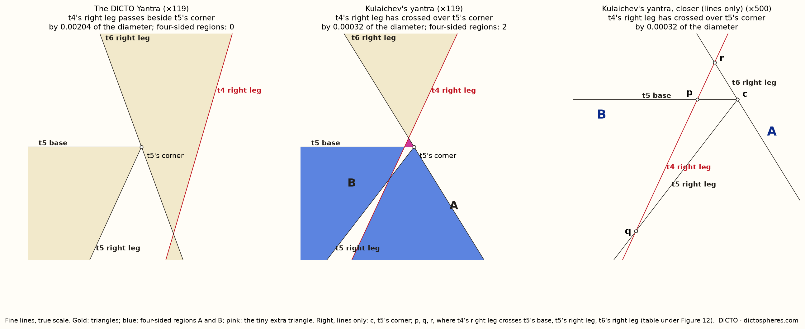
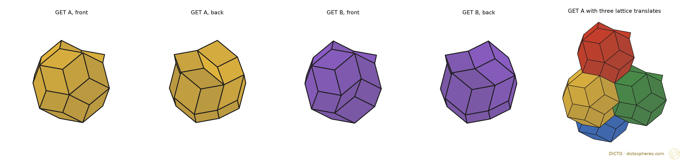
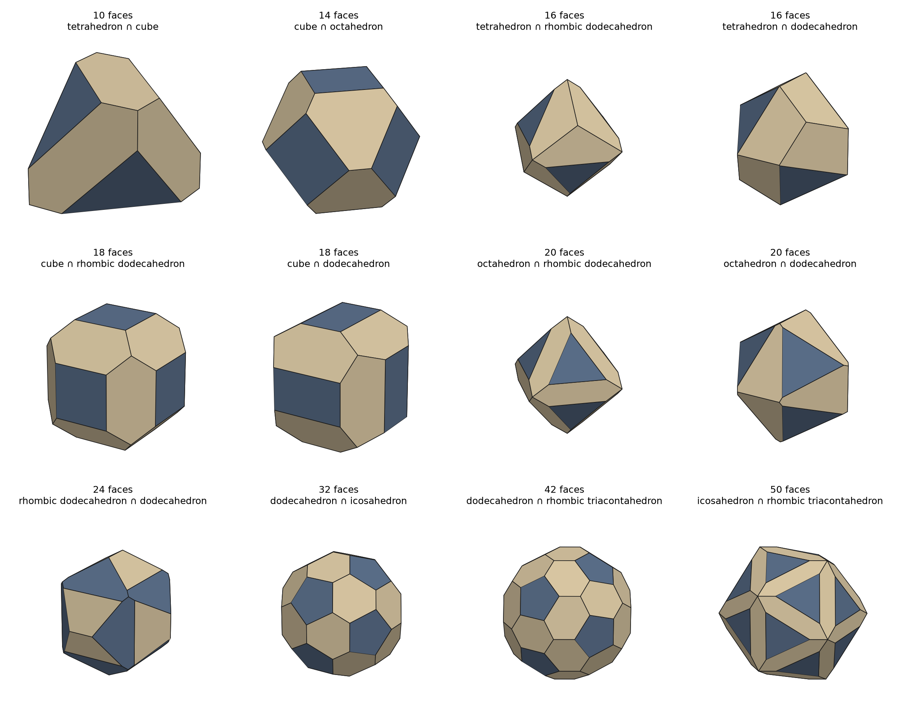
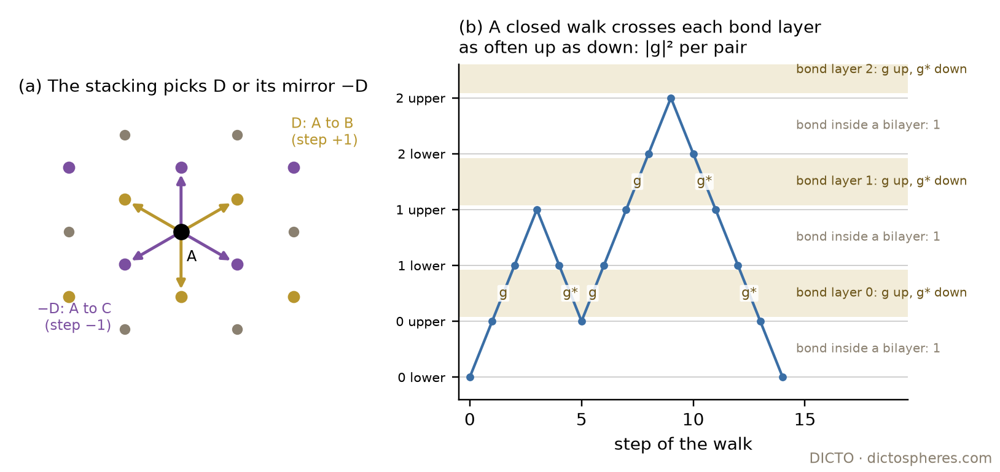

A dossier for mathematicians: one card per result, with its evidence and its credits
DICTO (artist, Osaka, Japan) · contact@dictospheres.com · https://dictospheres.com · ORCID 0009-0001-2620-2036
Dossier · Version 1 · 20 November 2026 · Licence CC BY-SA 4.0 · Every statement on a card is taken from the source paper or study named on it, and is claimed only as that source states it.
DICTO: the dossier, its audience, its form, the selection rule, and the point that the results first submitted make each next formalisation in Lean and Mathlib easier. Computation, proofs, verification and drafting with Claude (Anthropic).
Draft for DICTO's read (20 November 2026); delete this box at publication.
(1) The title is a placeholder; the name is DICTO's to choose.
(2) Card 3 rests on a study and a Lean entry, not on a paper; its Palomar submission is pending; it needs its own record before the dossier is shared.
(3) Added from the Concordance scan: the Loop Equality (Lean). Left out: Walls of Silence and Between the Queens (Appendix A).
(4) The map states reuse as it stands: the entries so far reuse each other's form; no registered entry imports the Dehn library yet (it is the planned base of the next two); the GET B library is its own.
(5) The scutoid card meets only rule (3), proved by hand: the loosest fit.
(6) The Concordance's paper list stops at #110; #111 to #114 were read from their own folders.
What this is
Each card is one result, one page: what it says, why it might interest a mathematician, how sure it is, whose work it stands on, and what is still open.
DICTO is an artist who works in geometry. His papers are released as open records with their scripts, exact checks and data; some of their statements are now proved in the proof assistant Lean 4 with the Mathlib library and registered on Palomar, a public registry of formalised results. This dossier picks out the results that a mathematician meeting the work for the first time may want to check first.
The selection rule. A result is on a card if it does at least one of three things: (1) it answers a question that someone else posed in print; (2) it is machine-checked; (3) it opens a new family, not found in the sources checked. Each card says which of the three it meets. Appendix A lists the other results considered and why each is in or out.
Evidence levels, from strongest: Lean on Palomar (proved in Lean, checked by Palomar's comparator with independent kernels, registered); Lean (proved in Lean, not registered); exact computation (exact or certified arithmetic, with scripts and logs in the study data); proof by hand; numerical. A card may carry several, one per part.
Wording. "Not found in the sources checked" means that: each paper lists its sources. Where DICTO's name for a known shape is used, an asterisk leads to its regular name and discoverer.
Card
Result
Rule met
Evidence
1 · #113
The Dehn Canon: Hilbert's third problem machine-checked from the solids up
(2)
Lean on Palomar
2 · #103
Kulaichev's Śrī Yantra is the only one that meets his conditions
Fair dice are Alexandrov's problem: 149 Aequi and 1083 Seraphim
(3)
proof by hand; exact computation
5 · #102
The Loop Equality on every close-packed stacking
(2)
proof by hand; Lean
6 · #114
Scutoid tissues: swaps per birth = ⟨F⟩/2 − 3
(3)
proof by hand; exact examples
The formal foundation
Each Lean entry so far was built on the form of the one before, and the Dehn Canon's library is written so that the next entries can import it unchanged.
Figure A. The Lean entries, their status on 20 November 2026, and what each reuses. Grey arrows: the form of an entry is reused (the second entry was laid out as the first, the third as the first two). Gold arrows: the planned entries import the Dehn Canon library's definitions verbatim (the convex polytope, scissors congruence, volume, the invariant); dashed, the long aim. The GET B library does not import the Dehn library: it is a separate development in exact ℤ[φ] arithmetic. Colours are labels only.
Entry
What is in Lean, and its status
Loop Equality (#102)
Theorem 1 and its explicit count, the closed walks at every atom, and the Fibonacci corollary; no sorry, no native_decide, only the axioms propext, Classical.choice and Quot.sound. In the paper since Version 5 (15 November 2026). Not registered.
Kulaichev's yantra (#103)
kulaichev_unique: exactly one figure meets Huet's conditions in Chiodo's form, Kulaichev's four conditions and admissibility; kulaichev_slope: its slope lies in an interval of width 2−21. A route separate from the paper's certificate. Registered as PALOMAR-2026-11-17-000006.
The Dehn Canon (#113)
The invariant defined from a set, the bridge for every dissection into convex polytopes, Dehn's theorem, Hilbert's question in his words, the classical edge sum; 43 files, 15,880 lines, studies 1 to 10, each built on the one before. Five statements registered as PALOMAR-2026-11-20-000003, checked by three kernels (con-ron, NanoDa and Lean's own); the entry's library is 32 of the 33 modules of the chain.
Grünbaum, k = 10 (GET B)
Four theorems: an example for k = 10 in Grünbaum's terms, and two calibration theorems (zones of 4 for the cube, 6 for the rhombic dodecahedron); no sorry, standard axioms; Palomar's comparator accepts (statement check, axiom check, Lean's kernel), and NanoDa and con-ron accept the same export; three altered copies are rejected. Submission pending.
Dissections to cubes
Planned: explicit scissors congruences to a cube for the zero solids of the canon (rhombic dodecahedron, truncated octahedron, golden rhombohedra, the cube ∩ rhombic dodecahedron line, the nine most regular space-fillers), on the Dehn library's definitions. Not built.
Dehn invariant in 4D
Planned: the same set-defined invariant in four dimensions, its bridge, and the six regular 4-polytopes. Not built.
Sydler's converse
The long aim named in the Dehn Canon (§10): equal volume and equal invariant imply scissors congruence; also Jessen's four-dimensional work and valuations in Mathlib. None attempted. No formal proof of Sydler's theorem was found in the searches recorded on 19 and 20 November 2026.
1 · The Dehn Canon: Hilbert's third problem, machine-checked
Paper #113 · Rule met: (2) machine-checked · Evidence: Lean on Palomar

From #113, Figure 6. The canon. Left, the solids proved to have Dehn invariant zero; right, those proved nonzero, in two families by the angles their invariants use. Each solid line is a pair proved not scissors congruent in any sizes; the arrow at the top: no nonzero solid is scissors congruent to a zero one. The last zero box (the nine most regular space-fillers) is zero by hand. Colours: the app colours of the solids; the rest neutral.
Result. In Lean 4 with Mathlib, the Dehn invariant is defined from a solid as a set, proved to be kept by every dissection into convex polytopes and to equal Dehn's classical edge sum, Hilbert's question is proved in his own words for two tetrahedra on one base, and on this base every two different nonzero solids of a canon of named solids are proved not scissors congruent, in any sizes.
Why it matters
Dehn answered Hilbert's third problem in 1901: volume does not decide whether one solid can be cut into another. Earlier formal proofs work in abstract models of edges and angles; FormalBook's chapter 10, the first Lean formalisation, says it does not bridge arbitrary geometric decompositions to its model. Here the angle at an edge is read from the point set as a share of a disc, and the lengths are Hausdorff lengths, so the theorem is about solids as point sets, and the bridge holds for every convex dissection. Stated this way, the invariant and the bridge can serve as a base for Sydler's converse, Jessen's four-dimensional work and valuations in Mathlib.
Evidence
Lean: 43 files, 15,880 lines, no sorry, only the three standard axioms. Five statements (the bridge, its form for finite unions, Dehn's theorem, Hilbert's question, the edge sum) registered on Palomar and checked by three kernels. By hand, with an exact check: zero invariant for the nine most regular space-fillers. Numerical, before the Lean work: integer-relation screens at 80 digits.
Credits
Dehn (1901) for the theorem and the invariant; Hilbert (1900) for the question; Jessen for the tensor form; Sydler (1965), quoted, not used; the Dehn invariants of the Platonic solids and the independence of the angles on paper: Conway, Radin and Sadun (1999); CLEO* and AXE* as golden tetrahedra with their invariants: Ogievetsky and Papadopolos (1999); the pair of tetrahedra: Aigner and Ziegler; the textbook cut argument: Hartshorne §27; additivity over dissections: Hadwiger, Groemer; Niven's theorem in Mathlib (Meiburg, Broshi); FormalBook chapter 10 (the first Lean formalisation) and its Minkowski–Weyl theorem. Claimed, not found in the sources checked: the machine-checked proofs, and the invariant of DICTO's FUJI in any form.
Open
Sydler's converse in Lean. The other ten fair dice of the axis lines. The fair 14-face die by its exact cut (exact on paper in #111, Theorem 2) in place of an interval. Does the fair 18-face die fill space? Hilbert's sentence for every base and altitude.
Links
DICTO DOI: 10.5281/zenodo.24383552 (Version 1: 10.5281/zenodo.24383553) · Palomar: PALOMAR-2026-11-20-000003 · Lean files: research branch, commit 68d302f5, studies 2026-11-19-lean-dehn-1 to -10 · App: no app link in the paper.
* CLEO is the Mosseri–Sadoc tile t4 and AXE the tile t6, each scaled by 1/φ (Mosseri and Sadoc, 1982). Rediscovered by DICTO as CLEO and AXE.
2 · Kulaichev's Śrī Yantra is the only one
Paper #103, Version 5 · Rule met: (1) answers Kulaichev's question of 1984; (2) machine-checked · Evidence: Lean on Palomar; exact computation

From #103, Figure 12. The crossing, at true scale. Left: in the DICTO Yantra, t4's right leg passes 0.00204 of the diameter beside t5's corner, and every region is a triangle. Middle and right: in Kulaichev's yantra it crosses over that corner by 0.00032 of the diameter; gold: triangles; blue: the four-sided regions A and B; pink: the tiny extra triangle.
Result. Huet's conditions, Kulaichev's four conditions and admissibility admit exactly one Śrī Yantra, Kulaichev's own, whose slope has a minimal polynomial of degree 348, and that one figure is not the traditional form: it has 45 regions, 41 of them triangles, and 28 sandhis, not 43 triangles and 24 sandhis.
Why it matters
A Śrī Yantra is nine triangles in a circle whose sides must cross three at a time at 18 points; four free parameters remain (Huet), and Kulaichev, Rao and Pustynski fixed one figure by four more conditions. Kulaichev asked in 1984 whether his equations "may or may not possess other real roots"; Chiodo (2021) calls the question still open; Pustynski argued for uniqueness from residual plots. The answer here is a proof, by certified computation and, separately, in Lean. With the Cleo-Antonius product uv = 2/φ³ (DICTO's pair of solids†) in place of equal great triangles, the conditions again admit exactly one yantra, the DICTO Yantra, and it has the traditional form (Theorem 15).
Evidence
Theorem 14: computer-assisted proof by certified computation (exact elimination to a resultant of degree 1744, real roots certified by three independent isolators, ball arithmetic, the Krawczyk test), with an independent second census that shares no elimination order, isolator or interval library; negative controls rejected. Its statement is also proved in Lean 4 with Mathlib by a separate, kernel-checked route, registered on Palomar. Theorem 15: certified computation; no Lean proof yet.
Credits
Kulaichev (1984) for the yantra and the question; Huet for the four-parameter model and its conditions, in Chiodo's form; Chiodo (2021) for the straightedge-and-compass construction of the family; Rao (1998) and Pustynski (2014) for the rigid yantra to 15 figures and the remark on "two additional tiny triangles"; Kavi Mahesh (2023); Chapati and Chapati (2026), who counted the traditional 43 by another rule and sampled the parameters numerically. Exact minimal polynomials and both uniqueness proofs: not found in the sources checked.
Open
Theorem 15 in Lean. The certificate of Theorem 14 itself checked in a proof assistant (its largest step is a 40 × 40 resultant). The walls between the nine-triangle counts 43, 45, 47 and 49. Whether the most even yantra found (E1) is the most even possible.
Links
DICTO DOI: 10.5281/zenodo.24052633 (Version 5: 10.5281/zenodo.24379694) · Palomar: PALOMAR-2026-11-17-000006 · App: no app link in the paper.
† The Cleo-Icos is the icosahedron face pyramid (classical; Mackay, 1962); Antonius is its space-filling partner (#44).
3 · Grünbaum's zone question at k = 10
Study 2026-11-15-grunbaum-k10 and its Lean entry · Rule met: (1) gives an answer to Grünbaum's question for k = 10; (2) machine-checked; (3) GET B not found in the sources checked · Evidence: exact computation; Lean, Palomar submission pending

From the study (no paper yet). GET A (gold) and GET B (violet), front and back. Right: GET A with three lattice translates (blue, green, red).
Result. GET B, the rhombic triacontahedron with four oblate golden rhombohedra taken out, is a rhombic monohedral parallelohedron of spherical type (30 congruent golden rhombi, adjacent faces never coplanar) whose six zones each have exactly 10 faces, and its translates fill space face to face on one lattice.
Why it matters
Grünbaum asked in 2010: "Given an even integer k ≥ 4, is there a rhombic monohedral parallelohedron such that every zone has exactly k faces? … No information is available for any k ≥ 10." The known cases were the cube (4), the rhombic dodecahedra of Kepler and Bilinski (6) and his own doubly indented rhombic icosahedra (8). GET B is a proved example at 10. Being an indentation of the triacontahedron, it is also a counterexample to his tentative remark that "none of the other isozonohedra obtainable by indentation of F or T seem to be parallelohedra". In exact computation, within one class of solids (every two zones crossing exactly twice, unions of golden rhombohedra, face-to-face lattice tilings), every such tiler is the triacontahedron less one oblate cell of each of four types.
Evidence
Exact computation in ℤ[φ]: volume equals covolume, an exact cell decomposition, no overlap with any translate that could reach the solid; an independent floating-point check covers 200,000 random points exactly once. Lean 4: four theorems proved with GET B as the witness, no sorry, standard axioms; Palomar's comparator accepts. The classification is exact computation outside Lean.
Credits
The question and the solids D1, D2: Grünbaum (2010); the Bilinski dodecahedron: Bilinski (1960); belts of convex parallelohedra: Venkov (1954), McMullen (1980). Not the first example of the family: D. Hall showed a tetrahedrally dimpled triacontahedron as a lattice space-filler (2016; the same solid as G. Inchbald's, by 2023), and J. Kostick's vZome array of 2022 shows GET A*; neither gives zone sizes, Grünbaum's question or a proof. The name GET (Grünbaum–Escher Triacontahedron) is DICTO's.
Open
k ≥ 12. Five further surfaces of rank 3 pass a floating-point coverage test and are undecided. Senechal and Taylor (2023), three new nonconvex parallelohedra, is not yet read in full. The classification in Lean.
Links
No DICTO DOI yet · Palomar: entry built, submission pending · Study data: research branch, studies/2026-11-15-grunbaum-k10 and 2026-11-20-palomar-grunbaum · App: none.
* First shown by J. Kostick in a vZome array ("concavo-convex triacon array", 3 April 2022), without proof; rediscovered by DICTO as GET A.
4 · Fair dice are Alexandrov's problem: the Aequi and the Seraphim
Papers #112 and #111 · Rule met: (3) a new family, not found in the sources checked · Evidence: proof by hand; exact computation

From #111, Figure 1. The twelve fair dice of the axis lines, each face with chance 1/N in the solid-angle model. Slate: the faces of the family with fewer faces; sand: the other family. Colours are labels only.
Result. A set of N face directions carries a die that is fair in the solid-angle model exactly when it satisfies Alexandrov's condition for equal masses, and the die is then unique up to scale (Theorem A of #112); with this rule the fair dice on the axes of a cube and an icosahedron are counted exactly: 149 Aequi under the seven frame groups, and 1083 Seraphim using both placements of the icosahedron.
Why it matters
Diaconis and Keller showed that a die can be fair by continuity, and Rawlins designs dice whose faces subtend equal solid angles. Turned inside out, a face's solid angle is the curvature at the matching corner of the polar body, so a fair die is Alexandrov's 1942 problem of prescribing curvature, with equal masses: existence and uniqueness follow, the condition becomes a finite test, and it always holds when the face directions come in opposite pairs. A list of dice becomes a count. Earlier, #111 found the fair member on each of twelve lines of solids cut from two Platonic or Catalan solids; for the 14-face die the cut is exact, 1 + √(2 tan(π/14) tan(2π/7)), with inradius over circumradius cot(2π/7).
Evidence
Theorem A: proof from Alexandrov's theorem in the statements of Oliker and Bertrand. Theorem B (149): enumeration, uniqueness and symmetry exact; existence exact by Theorem A's corollaries; every die computed to 80 digits. The 1083 Seraphim: complete in the same sense, existence exact, uniqueness by Theorem A; the counts 31 (symmetry O) and 53 (symmetry Oh) follow exactly from Theorem A. #111: exact (14-face die), certified identities (20- and 32-face dice), and the hidden angles proved by hand.
Credits
Alexandrov (1942), Oliker (2007) and Bertrand (2016) for the curvature problem; Diaconis and Keller (1989) for fairness by symmetry and by continuity; Rawlins for the equal-solid-angle rule; Van Oosterom and Strackee for the solid angle of a triangle; Girard's theorem; Goucher for a fair triangular prism. The names Aequus (plural Aequi) and Seraph (plural Seraphim) are DICTO's. The reading as Alexandrov's problem, the counts and the catalogues: not found in the sources checked.
Open
A structural reason why the diameter certificate never fails on the frame orbit sets. Does every failure of Alexandrov's condition there have a witness of N − 1 directions? Closed forms beyond the twelve; the fields of the radii of the 42- and 50-face dice.
Links
#112: DICTO DOI: 10.5281/zenodo.24383314 · #111: DICTO DOI: 10.5281/zenodo.24379796 · Palomar: none · App: no app link in the papers.
5 · The Loop Equality on every close-packed stacking
Paper #102 · Rule met: (2) machine-checked · Evidence: proof by hand; Lean (not registered)

From #102, Figure 1. The proof in two pictures. (a) From an atom, the three bonds to the next bilayer form a triangle (gold) or its point mirror (violet); the stacking decides which. (b) A closed walk crosses each bond layer as often up as down, so it counts the same on every stacking.
Result. On the tetrahedral network of every close-packed stacking, periodic or not, at every site and for every length, the number of closed non-backtracking loops equals diamond's: 24, 48, 480, 3432, … for lengths 6, 8, 10, 12 (OEIS A400949).
Why it matters
Diamond, lonsdaleite and the other stackings differ from the third shell of neighbours on, by up to 5%, and 4H and 6H are networks whose sites are not all alike; yet every site has the same number of loops of every length. The closed-walk part was known for periodic polytypes (Nagle; Thorpe); here the statement is for non-backtracking loops, at every single site, for aperiodic stackings too, with the same for the pyrochlore network of every stacking and for the sphere packings. Where the stacking does show: self-avoiding polygons first differ at length 18, by an exact local law (Theorem 5).
Evidence
Proof by hand (Fourier over the layers, then the Ihara–Bass recursion). Lean 4 with Mathlib: the equality, its explicit count, the closed walks at every atom, and the Fibonacci stacking; 11 modules, 2,372 lines, no sorry, standard axioms. Not formalised: the Ihara–Bass series for all lengths, and Corollaries 2 and 3. Exact counts agree at all 686 sites tested on 42 stackings.
Credits
Nagle (1966) and Thorpe (1972) for the closed walks; Guido, Isola and Lapidus (2008) for the Bass formula on periodic graphs; Ihara, Hashimoto, Bass; the Domb numbers (OEIS A002895) and P. Bala's chain formula; Betteridge (1981) and He, Wilson and Ganesh (2024) for the same mechanism in band structures; Herrero (2014) and Herrero and Ramírez (2013) for ice; Guttmann and Jensen for diamond's polygons. The conjecture was stated in DICTO's #74.
Open
The corollaries in Lean. Whether ice Ih and Ic have equal residual entropy: not decided by these results (Xu, Lin and Zhang).
Paper #114 · Rule met: (3) a law not found in the sources checked · Evidence: proof by hand; exact examples
From #114, Figure 5. The law at a glance. Left: a Poisson–Voronoi tessellation and the bcc tessellation, each clipped to a cube with a corner cut away (colours are labels only). Right: swaps per birth in sweeps of random simple 4-polytopes, rising towards 24π²/35 − 2, and the space-time simulation (amber); the dashed line is the bcc value 4.
Result. If an open region of space-time is filled by a simple face-to-face complex of convex cells and swept by planes in any generic direction, then each cell is born at its lowest corner and dies at its highest, and per unit volume births = deaths = cells and swaps = corners − 2 × cells, so swaps per birth = ⟨F⟩/2 − 3, where ⟨F⟩ is the mean number of walls of a cell.
Why it matters
In a moving flat tiling Euler's formula fixes the net number of cells but leaves the number of neighbour swaps free. Stacked in time, every cell is a tube, and a cell that swaps neighbours is a scutoid. If the tubes are convex, the number of swaps per birth is fixed by how many walls a tube has, the same whichever direction is taken as time: 4 for the bcc tessellation, 24π²/35 − 2 = 4.7677 for Poisson–Voronoi (simulated 4.7669 ± 0.0006). Without convexity the counts can depend on the direction, and on the Sun's granulation they do. This carries DICTO's reading of the scutoid tissue as a slice of a four-dimensional polytope (#104) to open space-time.
Evidence
Theorem 1: proof by hand. Exact examples: the swept 120-cell (116 / 366 / 116), truncated 120-cell and bitruncated 600-cell; bcc; Poisson–Voronoi from Meijering's mean. Simulations and an event logger agree. No natural system has yet given a swap count that passes its checks.
Credits
Gómez-Gálvez et al. (2018) for scutoids and the name; Mughal et al. (2018) for scutoids in a froth; McMullen's line shellings and the h-vector; Banchoff's critical points; Meijering (1953) and Møller (1989) for the Poisson–Voronoi mean; Lautensack and Zuyev (2008) for Laguerre sections; Mason et al. (2015) for the mean of grain growth.
Open
The grain-map check: sweep a public three-dimensional grain map by planes and compare swaps per birth with ⟨F⟩/2 − 3 (3.883 for grain growth). Grains have curved walls, so this tests how far the law carries beyond convex cells.
Links
DICTO DOI: 10.5281/zenodo.24384789 · #104: DICTO DOI: 10.5281/zenodo.24111864 · Palomar: none · App: no app link in the paper.
Appendix A. Results considered
Paper
Decision
Reason
#113 Dehn Canon
in
Machine-checked; registered on Palomar (card 1).
#103 Yantra, v5
in
Answers Kulaichev's question of 1984; Lean on Palomar (card 2).
GET, study
in
Answers Grünbaum's question for k = 10; Lean entry built; GET B not found in the sources checked (card 3). No paper yet.
#112, #111 Fair dice
in
Dice cut from two or more solids, their enumeration by symmetry group and the link to Alexandrov's problem: not found in the sources checked (card 4).
#102 Loop Equality
in
Added from the scan: Theorem 1 is machine-checked in Lean (card 5). The conjecture was DICTO's own (#74).
#114 Scutoid tissues
in
The law is not found in the sources checked; proof by hand (card 6). The loosest fit of the six.
#110 Walls of Silence, v3
out
Exact results about classical polytopes (the 600-cell and the 120-cell): copies, walls and chamber counts. They answer DICTO's own question, and they are counts on known solids, not a new family. One sub-statement, the fewest covers of Theorem B′ (d), is certified by DRAT proofs checked with drat-trim, but the main theorems are exact computation; the paper itself says no specialist has reviewed it.
#76 Between the Queens, v2
out
The seven solids are classical (Boole Stott, Wythoff, Coxeter); the atlas of slices and shadows is computed in double precision and checked at the ends; no question posed by others, no machine-checked proof, no new family.
#104 Scutoid Tissues in 4D
in card 6
Its sweep counts are the closed version of card 6.
#43 Kyushindo Cores
out for now
Sharp nesting constants, proved by hand, DICTO's own question. Theorem 4 has a Lean proof in a study, but the paper does not yet state it (next version), and the containment follows in a few lines from a known diameter bound (Greenwald; Dunbar, Greenwald, McGowan and Searle).
#47 Every Mix of the Platonic Solids
out
DICTO's own proposal; the fillings use a kit of connectors; no outside question, no machine check.
#92 Aristotle's Pyramid in Layers
out
Settles a question left open in DICTO's own #77 and #44.
#93 One Double Pyramid, Two Splits
out
Uniqueness of the rigid pairs; DICTO's own question; no machine check.
#44 Aristotle's Pyramid
out
Reads a classical statement (On the Heavens III.8), not an open question; no machine check.
#38 Universal PiTet
out
Its rule T is the three-dimensional antipedal construction; its reverse is Smarandache's face pedal polyhedron (open problem 7.3, 2010), which the paper names but does not answer.
#100 The Dehn Test Picks the Lone Tilers
out
A Dehn-invariant test applied to DICTO's own tilers; no outside question, no machine check.
#105 4D Vacuus of the Permutohedron
out
A count of central planes of the permutohedron (OEIS A402191 submitted, under review); DICTO's own question; no machine check.
#108 Atlas of the Chains
out
The balance law is the symmetry of the fine h-vector (Stanley; Bayer and Billera); the loop count E − V + 1 is DICTO's reading, not an outside question.
#109 Silent Running
out
Judged from its Concordance entry only: exact computation on DICTO's own question.
The other Concordance entries were scanned for the marks of the rule; none came close. Rows for #43, #44, #47, #92, #93, #100, #105, #108 and #109 are judged from the Concordance and the papers' statements of what is new.
Appendix B. Sources
Card 1: #113 (Version 1 and the Version 2 text with the Palomar reference) and studies 2026-11-19-lean-dehn-1 to -10. Card 2: #103 Version 5. Card 3: studies 2026-11-15-grunbaum-k10 and 2026-11-20-palomar-grunbaum. Card 4: #112, #111, and study 2026-11-20-seraphim-catalogue for the name. Card 5: #102 Version 6. Card 6: #114. Map: studies 2026-11-16-palomar-yantra, 2026-11-19-palomar-dehn, 2026-11-20-palomar-grunbaum and 2026-11-20-palomar-next-prescore. Every picture is taken unchanged from the paper or study named in its caption.